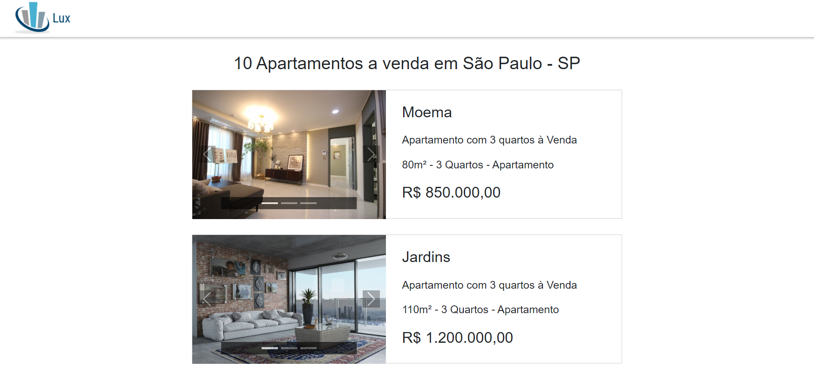
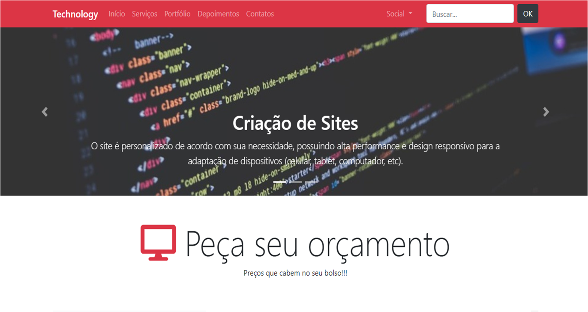

Projetos Desenvolvidos
Estes projetos foram desenvolvidos com o intuito de treino e para servir como uma amostra dos meus conhecimentos nas respectivas tecnologias.
VoltarLux
Portal de Anúncios Imobiliários:
Este projeto é um site institucional de uma empresa TI prestadora de serviços que cria aplicativos, sites e automatiza tarefas para os seus clientes.
Tecnologias Utilizadas: Angular - Typescript - Bootstrap - HTML - SCSS
Testes: Karma - Jasmine
API Fake: Nodejs
Goldbank Financing
Simulador de Financiamento Imobiliario

Este projeto é um site institucional de uma empresa TI prestadora de serviços que cria aplicativos, sites e automatiza tarefas para os seus clientes.
Tecnologias Utilizadas: Angular - Typescript - Bootstrap - HTML - SCSS
Technology
Site Institucional
Este projeto é um site institucional de uma empresa TI prestadora de serviços que cria aplicativos, sites e automatiza tarefas para os seus clientes.
Tecnologias Utilizadas: Jquery - Bootstrap - HTML - CSS